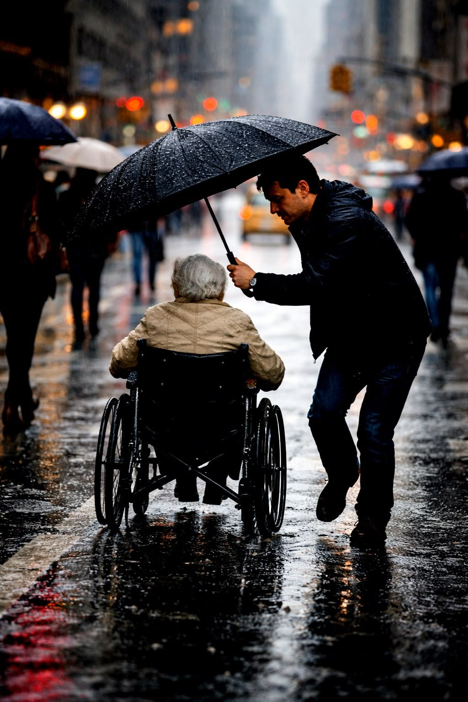
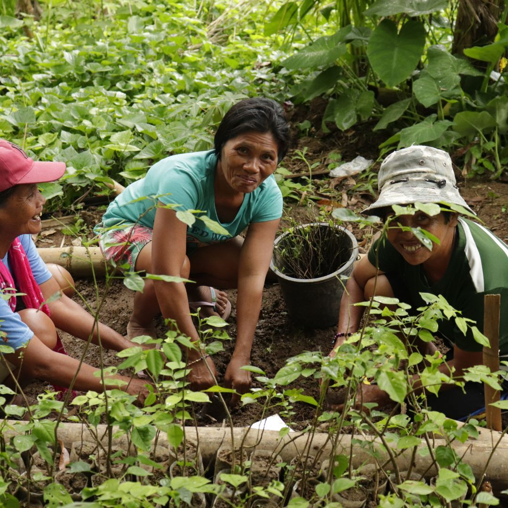
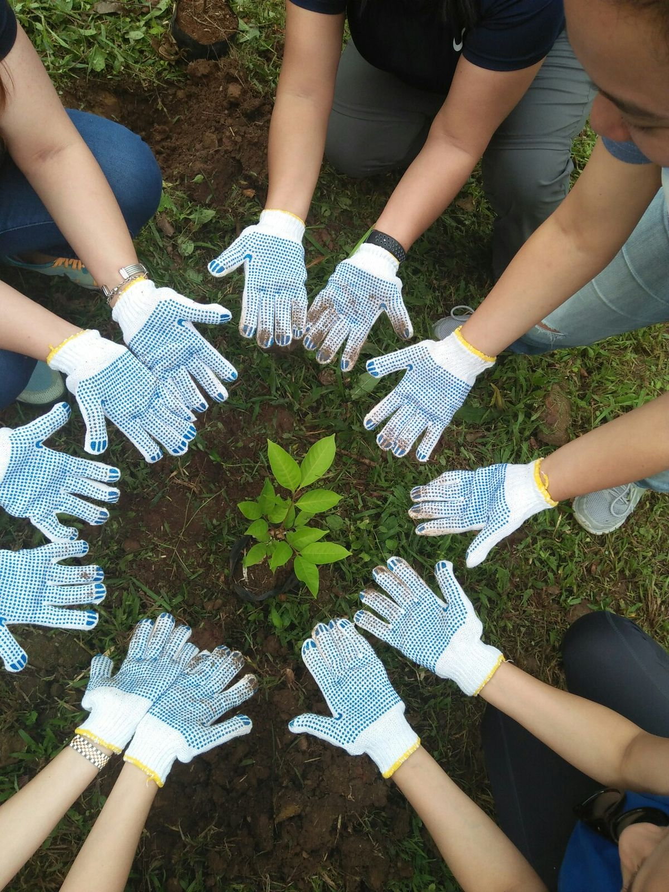

My Connection to Information Technology
The values and attributes of the University of Batangas can also be connected to Information Technology. These values can guide me as a student while I learn about computers, programming, and other technologies. They can also help me become a responsible and hardworking IT professional in the future.
1. Faith in God


Connection to Information Technology
Faith in God is important to me because it reminds me to use technology in a good and responsible way. As an IT student, I can use my skills to create things that can help other people. It also teaches me to be honest when doing projects and using information online. I should not use technology to harm or deceive others. I believe that my knowledge in IT can be used for something meaningful and helpful. This value reminds me to always do what is right while learning and using technology.
2. Love of Wisdom


Connection to Information Technology
Love of Wisdom is connected to IT because technology requires continuous learning. As an IT student, I need to learn new skills and understand how different technologies work. Programming also requires patience because mistakes are normal while creating a program. Learning from those mistakes can help me become better at solving problems. I also need to be curious and ask questions when I do not understand something. This value encourages me to keep learning and improving my knowledge in Information Technology.
3. Service to Fellowmen


Connection to Information Technology
Service to Fellowmen can be connected to IT because technology can be used to help other people. As an IT student, I can create websites or programs that can make tasks easier for users. I can also use my skills to help classmates who are having problems with technology. Technology is more meaningful when it is used to solve problems and help communities. I should remember that my skills are not only for my own benefit. I can use what I learn in IT to serve and help others.
4. Builder and Innovator of Knowledge


Connection to Information Technology
Being a Builder and Innovator of Knowledge is connected to IT because IT students create different digital projects. We can build websites, programs, applications, and other systems using what we learn. Creating these projects also allows us to use our own ideas and creativity. Sometimes our first idea does not work, so we need to improve it and try again. This teaches us to be patient and not give up easily. As a BSIT student, I want to use my knowledge to create useful technology.
5. Efficient Professional and Effective Communicator



Connection to Information Technology
Communication is very important in Information Technology because IT students often work with other people. When creating a project, everyone needs to understand their responsibilities and tasks. Good communication can help avoid mistakes and confusion during group projects. IT professionals also need to explain technical ideas in a way that users can understand. Being professional means doing tasks properly and respecting the people we work with. These skills can help me become a better IT professional in the future.
6. Social, Moral and Global-Minded Citizen


Connection to Information Technology
Being a Social, Moral and Global-Minded Citizen is important in IT because technology connects people from different places. As an IT student, I should respect other people when using social media and other online platforms. I should also be careful with personal information and avoid sharing things that can hurt others. Technology can have a big effect on society, so it should be used responsibly. I also need to respect different cultures and opinions when communicating online. This value can help me become a responsible user and future IT professional.
7. Transformed Lifelong Learner


Connection to Information Technology
Being a Lifelong Learner is important in IT because technology keeps changing. New applications, programs, devices, and systems are always being developed. As a BSIT student, I need to continue learning even after finishing my current subjects. I can learn through practice, research, projects, and experience. Learning new things can help me improve my skills and understand technology better. I believe that continuing to learn will help me become more prepared for my future career in Information Technology.